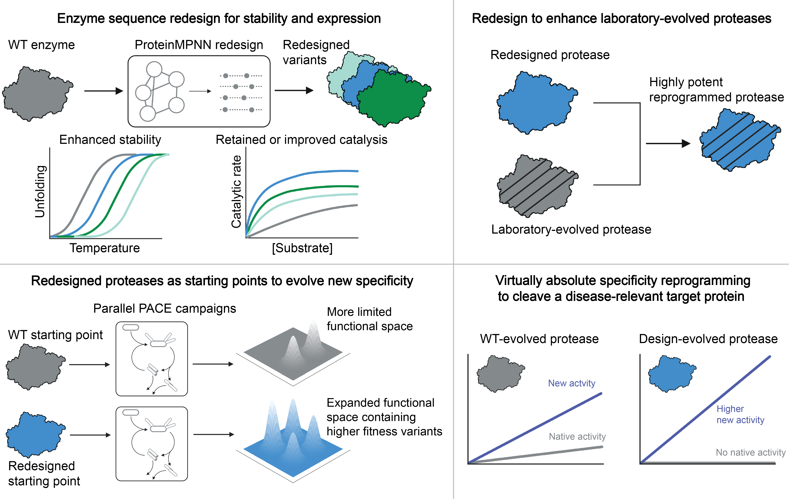

Publications
Featured Publications
5
AI-redesigned starting points enhance laboratory enzyme evolution
In review (2025)
AI sequence-redesigned enzymes serve as better starting points for laboratory evolution than wild-type enzymes, consistently yielding evolved proteases with superior stability, activity, and specificity compared to variants evolved from natural proteases.

All Publications
2025
6
Enhancing in vivo prime editing with computational redesign of laboratory-evolved reverse transcriptases
In preparation
5
AI-redesigned starting points enhance laboratory enzyme evolution
In review
AI sequence-redesigned enzymes serve as better starting points for laboratory evolution than wild-type enzymes, consistently yielding evolved proteases with superior stability, activity, and specificity compared to variants evolved from natural proteases.
4
Prime editing-installed suppresor tRNAs for disease-agnostic genome editing
Nature (2025, in press)
2024
3
Efficient site-specific integration of large genes in mammalian cells via continuously evolved recombinases and prime editing
Nature Biomedical Engineering (2024)
2
Phage-assisted evolution of highly active cytosine base editors with enhanced selectivity and minimal sequence context preference
Nature Communications (2024)
2023
1
Evolution of an adenine base editor into a small, efficient cytosine base editor with low off-target activity
Nature Biotechnology (2023)